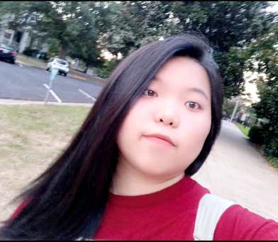
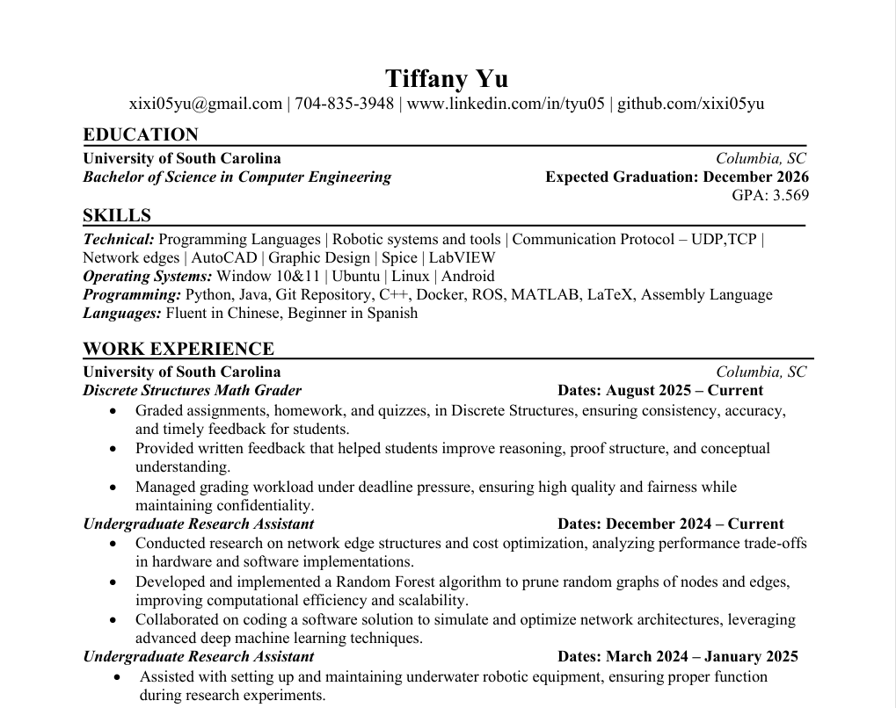
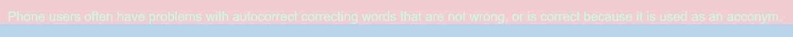
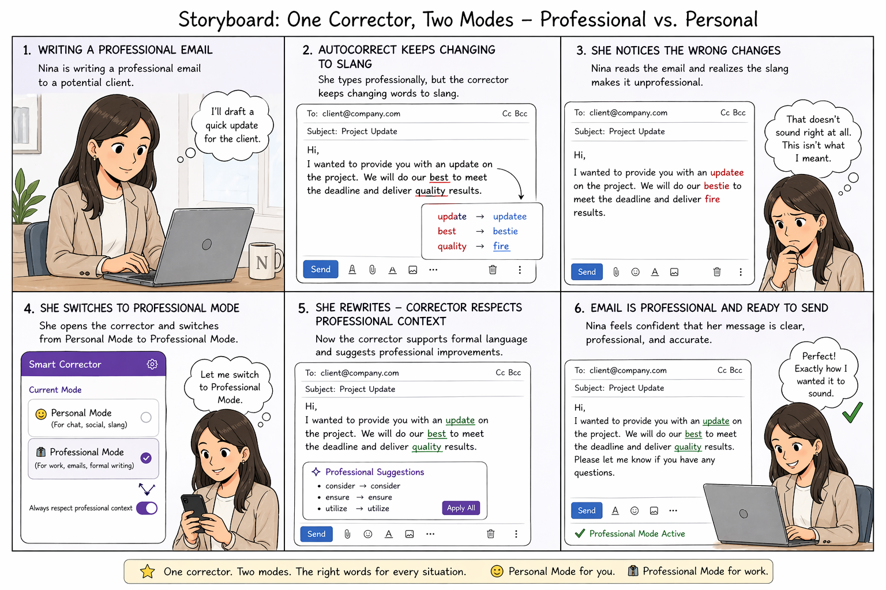
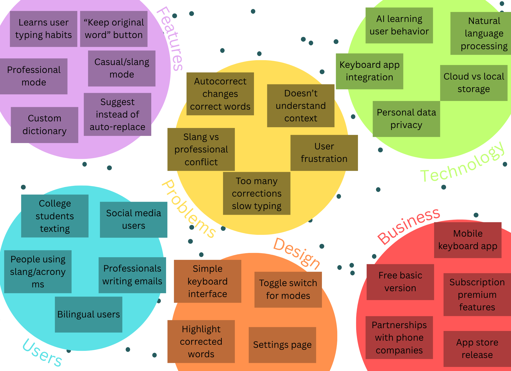
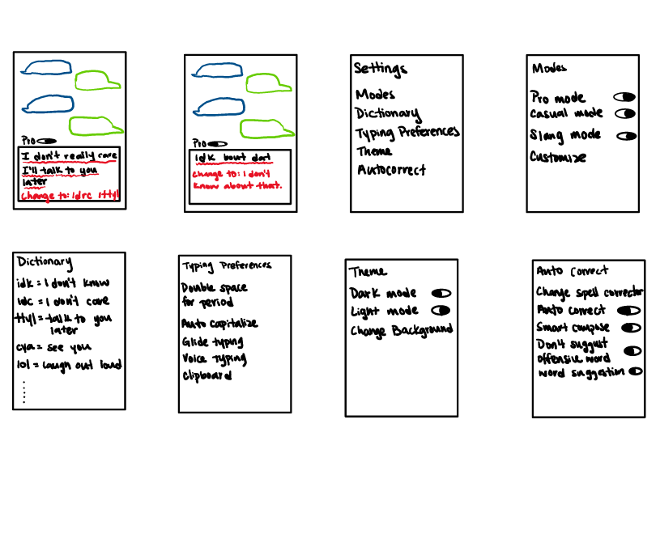

Hello! My name is Tiffany Yu, and I am a student studying computing engineering. I am interested in technology and AI and how it can be used to improve everyday tasks and improve our lives for the better. My goal is to graduate college and earn my masters then find a job that I like.

View my resume to learn more about my education, experience, and skills in computing and technology.

Phone users often have problems with autocorrect correcting words that are already correct, especially when the words are acronyms, slang, or part of a specific context.

These sketches show three scenarios for a smart autocorrect app: casual texting, professional email writing, and switching between personal and professional modes.

This affinity diagram organizes ideas for the smart autocorrect system, grouping features, challenges, users, technology, and future possibilities into clear categories.

This paper prototype demonstrates how users would interact with the smart autocorrect app. It walks through key features such as switching between professional and personal modes, reviewing corrections, and customizing user preferences.
tyu@email.sc.edu